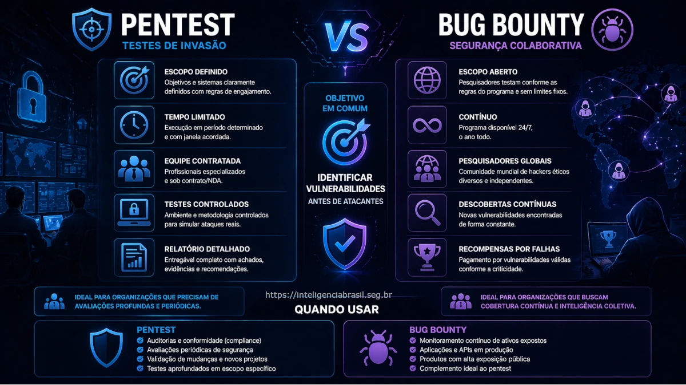

Neste artigo
A segurança ofensiva se tornou um dos principais pilares da proteção digital nas empresas. No entanto, uma dúvida comum entre gestores e equipes técnicas é: qual abordagem realmente oferece mais segurança, pentest ou bug bounty?
Embora ambos tenham o mesmo objetivo — identificar vulnerabilidades antes que atacantes o façam — eles operam de formas completamente diferentes e atendem necessidades distintas.
Escolher errado pode significar falsa sensação de segurança ou desperdício de investimento.
O que é Pentest e como funciona na prática
Definição de Pentest
O pentest, ou teste de intrusão, é uma avaliação controlada conduzida por especialistas em segurança com o objetivo de identificar vulnerabilidades exploráveis em sistemas, aplicações ou infraestruturas.
Diferente de scanners automatizados, o pentest envolve análise manual, exploração realista e validação de impacto. Ele é conduzido dentro de um escopo definido, com regras de engajamento claras e prazo determinado.
Tipos de Pentest
Os principais modelos incluem:
- Black box: sem conhecimento prévio do ambiente — simula a perspectiva de um atacante externo
- Grey box: acesso parcial — combina visão externa com conhecimento interno limitado
- White box: conhecimento completo do ambiente — permite análise mais profunda de código e arquitetura
Cada abordagem varia em profundidade e objetivo. Para entender os frameworks e metodologias de pentest, consulte nosso guia específico.
Quando o Pentest é mais indicado
- Antes de go-live de sistemas críticos
- Após mudanças significativas na infraestrutura
- Para atender auditorias e compliance
- Para validação de controles de segurança existentes
Vantagens do Pentest
Pontos fortes do Pentest
- Alta profundidade técnica: análise manual detalhada que scanners não alcançam
- Contexto de negócio: avalia impacto real das vulnerabilidades encontradas
- Relatórios estruturados: documentação clara com evidências e recomendações
- Prioridade de correção: classificação por criticidade orientada ao risco
O que é Bug Bounty e como funciona
Definição de Bug Bounty
Bug bounty é um modelo onde empresas oferecem recompensas financeiras para pesquisadores independentes que identifiquem vulnerabilidades em seus sistemas. É uma abordagem aberta e contínua que mobiliza uma comunidade global de hackers éticos.
Como funciona na prática
Empresas publicam um escopo (sistemas, domínios, APIs) e permitem que pesquisadores testem dentro de limites definidos. As vulnerabilidades encontradas são reportadas por meio de plataformas especializadas como Bugcrowd e HackerOne, e recompensadas conforme criticidade.
Diferente do pentest, não há prazo fixo nem equipe dedicada exclusiva — a descoberta depende da participação voluntária dos pesquisadores.
Quando o Bug Bounty é mais indicado
- Empresas com alta maturidade em segurança
- Ambientes amplos e complexos
- Necessidade de testes contínuos ao longo do tempo
- Produtos com exposição pública (SaaS, APIs, apps)
Vantagens do Bug Bounty
Pontos fortes do Bug Bounty
- Escala global de testadores: centenas de pesquisadores com diferentes especialidades
- Descoberta contínua: não se limita a um período específico
- Diversidade de abordagens: múltiplas perspectivas e técnicas de ataque
- Custo variável por resultado: paga-se apenas por vulnerabilidades válidas
Principais diferenças entre Pentest e Bug Bounty
Controle vs abertura
Profundidade vs escala
- Pentest oferece profundidade — cada vetor é explorado em detalhe com encadeamento de vulnerabilidades
- Bug bounty oferece escala — maior cobertura com múltiplos testadores simultâneos
Previsibilidade de resultados
- Pentest tem escopo e prazo definidos — resultados previsíveis e documentáveis
- Bug bounty depende da participação externa — volume de findings pode variar significativamente
Responsabilidade e contexto
Pentest considera o impacto de negócio — a equipe avalia não apenas a vulnerabilidade técnica, mas o risco real para a operação. Bug bounty foca na descoberta técnica — o pesquisador reporta o que encontra, mas raramente tem visão do contexto organizacional.
Qual abordagem oferece mais segurança?
Não existe substituição direta
Pentest e bug bounty não competem — eles se complementam. Cada um atua em uma dimensão diferente da segurança ofensiva, e a escolha entre eles deve considerar maturidade, contexto e objetivos.
Segurança baseada em maturidade
- Empresas iniciantes precisam de pentest — para entender suas vulnerabilidades e estabelecer processos de correção
- Empresas maduras podem evoluir para bug bounty — com processos de triagem e resposta já consolidados
Defesa em camadas
A melhor estratégia envolve:
- Pentest para validação profunda e periódica
- Bug bounty para cobertura contínua entre os ciclos de pentest
Essa combinação segue o princípio de defesa em camadas, maximizando a cobertura e a profundidade.
Risco de escolha incorreta
Atenção
Implementar bug bounty sem maturidade pode expor ainda mais a empresa. Sem capacidade de triagem, correção e resposta adequada, os reports se acumulam e as vulnerabilidades permanecem abertas — agora com mais pessoas cientes delas.
Quando escolher Pentest, Bug Bounty ou ambos
Cenários ideais para Pentest
- Ambientes críticos com dados sensíveis
- Empresas em início de maturidade em segurança
- Necessidade de auditoria formal ou compliance
- Validação pré-lançamento de sistemas
Cenários ideais para Bug Bounty
- Produtos públicos (SaaS, APIs, apps mobile)
- Empresas com SOC estruturado e processo de resposta a incidentes
- Ambientes já previamente testados via pentest
- Necessidade de segurança contínua entre ciclos de teste
Uso combinado
Pentest + bug bounty gera:
Benefícios da abordagem integrada
- Profundidade + escala: cobre tanto vetores complexos quanto superfícies amplas
- Segurança contínua: elimina janelas de exposição entre ciclos de teste
- Maior cobertura de riscos: diferentes perspectivas e metodologias complementares
Decisão baseada em risco
A escolha deve considerar:
- Exposição da empresa ao ambiente externo
- Tipo de sistema e sensibilidade dos dados
- Capacidade interna de resposta e correção
- Orçamento e ciclo de desenvolvimento
Erros comuns ao implementar Pentest ou Bug Bounty
Tratar Pentest como checklist
Pentest não é auditoria documental — é validação real de segurança. Tratar como mero requisito de compliance reduz drasticamente seu valor e pode gerar falsa sensação de segurança.
Abrir bug bounty sem preparação
Sem processos de triagem, comunicação e correção, um programa de bug bounty pode gerar caos operacional — reports não gerenciados, duplicidades e pesquisadores frustrados.
Ignorar correções
Encontrar vulnerabilidade e não corrigir é inútil. A gestão de vulnerabilidades deve ser parte integral de qualquer programa de segurança ofensiva.
Falta de integração com segurança defensiva
Sem SOC, monitoramento ou purple teaming, os insights gerados por pentest e bug bounty são perdidos. A segurança ofensiva precisa alimentar a defesa para gerar valor real.
Como estruturar uma estratégia eficaz de segurança ofensiva
Comece com diagnóstico
Entenda sua maturidade antes de escolher abordagem. Uma empresa que ainda não tem visão clara de seus ativos e vulnerabilidades não está pronta para bug bounty.
Defina prioridades
Nem todo sistema precisa do mesmo nível de teste. Sistemas críticos com dados sensíveis exigem pentest profundo; superfícies públicas podem se beneficiar de cobertura contínua via bug bounty.
Integre com segurança defensiva
Pentest e bug bounty precisam alimentar monitoramento e resposta. Os achados devem ser integrados ao SOC, SIEM e processos de resposta a incidentes para que a organização aprenda e evolua a cada ciclo.
Evolua continuamente
Segurança não é evento — é processo. A estratégia ofensiva deve evoluir conforme a maturidade da organização, o cenário de ameaças e a expansão da superfície de ataque.
Considerações finais
A escolha entre pentest e bug bounty não deve ser baseada em tendência, mas em contexto.
Empresas que buscam apenas cumprir requisito optam por soluções pontuais. Já aquelas que realmente querem reduzir risco adotam estratégias integradas.
A segurança eficaz não está na ferramenta ou no modelo, mas na forma como eles são aplicados dentro de uma visão estratégica e contínua.
Perguntas Frequentes
Pentest é um teste controlado, com escopo definido, prazo e equipe dedicada. Bug bounty é um modelo aberto e contínuo, onde pesquisadores independentes buscam vulnerabilidades em troca de recompensas. Pentest oferece profundidade e contexto de negócio; bug bounty oferece escala e diversidade de abordagens.
Não é recomendado. São abordagens complementares. Pentest oferece profundidade e análise de impacto que bug bounty normalmente não entrega. Empresas sem maturidade suficiente podem se expor ainda mais ao abrir um programa de bug bounty sem controles adequados.
Bug bounty é mais indicado para empresas com alta maturidade em segurança, que já possuem SOC estruturado, processos de resposta a incidentes e ambientes previamente testados. Produtos com exposição pública e ambientes amplos se beneficiam especialmente desse modelo.
Depende do contexto. Pentest tem custo fixo e previsível, ideal para validações pontuais. Bug bounty tem custo variável, pago por resultado, mas exige maturidade para gerenciar os reports. Para empresas iniciantes, pentest tende a oferecer melhor retorno. Para empresas maduras, a combinação de ambos é a estratégia mais eficaz.
Fontes e referências técnicas
- OWASP Testing Guide
- OWASP Top 10
- NIST SP 800-115 - Technical Guide to Information Security Testing
- Bugcrowd State of Bug Bounty Report
- HackerOne Annual Security Report
- MITRE ATT&CK Framework
- ISO/IEC 27001 - Information Security Management
Precisa de Pentest ou consultoria em Segurança Ofensiva?
Oferecemos testes de intrusão especializados, avaliação de maturidade e apoio na estruturação de programas de segurança ofensiva para empresas de todos os portes.
Falar com Especialista